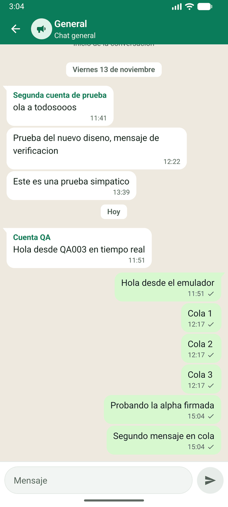
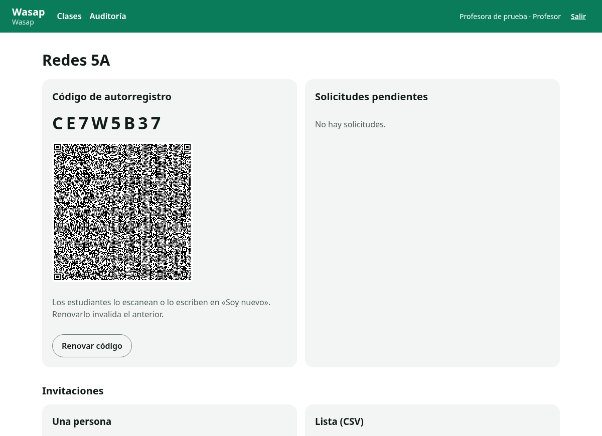

Pasa lista.
Escribe
al grupo.
- Entrada y salida, alternadas
- General, privados y grupos de hasta 100
- Protocolo propio, sin HTTP


Dentro · confirmado por el servidor
Visto por alguien
La red del aula
EstudianteEstudiante
 Profesor
ProfesorServidorKotlin · JVM 25
5050 TCP + TLS5443 panel HTTPSPostgreSQLJDBC · transacciones

Panel web